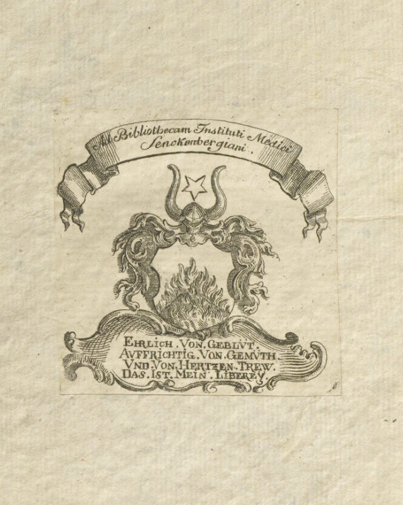

Kooperation mit der UB Johann Christian Senckenberg
Die Kooperation begann im Rahmen einer Lehrveranstaltung mit dem Fokus auf den Kupferstecher Matthäus Merian d.Ä. und Frankfurt als Verlagsort. Eine Übung im Wintersemester 2018/2019 fand in Teilen in den Räumlichkeiten der Universitätsbibliothek direkt an den Beständen (und in der Graphischen Sammlung des Städel Museums) statt. Im Vorfeld und parallel dazu wurden Recherchen und Wiederauffinden von weiteren Bänden im Themenbereich okkulte Literatur (über die Kataloge hinausgehend, Recherche in weiteren Verzeichnissen und vor Ort) durch die UB weiter betrieben und eine Bestandsanalyse in Rücksprache mit den Forschern durchgeführt.
Auf Vorschlag und in Absprache mit der stellvertretenden Direktorin der UB, Dr. Angela Hausinger, wurde die bestehende Kooperation mit dem Kunstgeschichtlichen Institut im Sommersemester 2020 intensiviert und auf die Digitalisierung der Occulta-Bestände durch die Abteilung Bestandserhaltung und Digitalisierung ausgeweitet.
Sammlung Frankfurt und Seltene Drucke der UB Johann Christian Senckenberg (Dr. Mathias Jehn; Bärbel Wagner) und Referat Digitalisierung der Abteilung Bestandserhaltung und Digitalisierung (Dr. Mathias Jehn; Agnes Brauer und Susanne Schork)
- Recherche, fachliche Begleitung von Lehrveranstaltungen vor Originalen, bibliothekswissenschaftliche Betreuung und red. Mitarbeit für die Merian-Website: Bärbel Wagner
- Digitalisierung, Strukturierung und technische Aufbereitung der Alchemica illustrata-Bestände der UB: Agnes Brauer; Susanne Schork; Michelle Kamolz
Digitalisierung


Der erste Schritt bei der Digitalisierung liegt in der Auswahl der Objekte. Ist die Entscheidung getroffen, erfolgt eine genaue Betrachtung des Bandes. Fragile Objekte können beispielsweise nicht auf einem beliebigen Scanner digitalisiert werden. Hier eignet sich der sogenannte „V-Scanner“ am besten. Auch ein solcher ist für das Merian-Projekt eingesetzt worden (s. Bild). Die Bücher werden dann von eigens dafür geschultem Personal digitalisiert: Von jeder Seite wird ein hochauflösendes und unkomprimiertes digitales Bild mit einer Auflösung von 400 dpi erstellt. Diese Bilder werden geprüft und auf den Digitalisierungsserver der UB hochgeladen, es erfolgt eine Qualitätsprüfung und Nachbearbeitung. Dabei wird eine Paginierung vorgenommen und Strukturen erfasst, damit sich die Nutzenden besser orientieren können. Für das optimale Retrieval wird eine Volltexterkennung durchgeführt. Eine Bildbearbeitung erfolgt nicht, denn das digitale Bild soll möglichst originalgetreu das analoge Werk wiedergeben. Sind all diese Schritte erfolgt, wird das Digitalisat freigegeben und erscheint im Netz.
Agnes Brauer (2022)


Alchemica illustrata-Bestände der UB Frankfurt
Der Occulta-Bestand der Universitätsbibliothek Frankfurt, der auch einen Großteil der wichtigsten Alchemica illustrata aus dem ersten Drittel des 17. Jahrhundert integriert, speist sich aus der ehemaligen Stadt- und Universitätsbibliothek sowie der ehemaligen Senckenbergischen Bibliothek>. Die im Projekt Merian und die Bebilderung der Alchemie untersuchten Occulta-Bestände der UB Frankfurt entstammen folglich den historischen Sammlungen der Frankfurter Bürgerschaft, die sich bis in die Entstehungs- und Merianzeit zurückverfolgen lassen.
Seit 2005 sind Stadt- und Universitätsbibliothek Frankfurt am Main (StUB) und Senckenbergische Bibliothek (SeB) gemeinsam die zentrale Bibliothek der Universität Frankfurt am Main mit dem neuen Namen Universitätsbibliothek Johann Christian Senckenberg. Als die Universität Frankfurt am Main im Jahre 1914 gegründet wurde, erhielt sie keine eigene Universitätsbibliothek, sondern fünf Frankfurter Bibliotheken (die Stadtbibliothek, die Senckenbergische Bibliothek, die Rothschildsche Bibliothek, die Kunstgewerbebibliothek und die Zentralbibliothek des Städtischen Krankenhauses) übernahmen gemeinsam die Aufgaben einer Universitätsbibliothek. Im Jahr 1945 wurden diese zur „Stadt- und Universitätsbibliothek Frankfurt am Main“ vereinigt, mit Ausnahme der Senckenbergischen Bibliothek, die zuerst eine eigenständige Einrichtung blieb. 2005 erfolgte als letzter Schritt der Zusammenschluss zur heutigen Universitätsbibliothek.
Ehemalige StUB (Stadt- und Universitätsbibliothek Frankfurt am Main)
Anlässlich einer Pilgerreise nach Jerusalem vermachte der Frankfurter Patrizier Ludwig von Marburg zum Paradies 1484 dem Rat der Stadt seine Büchersammlung, damit sie eine Liberey aufrichten könne. Als Ratsbücherei wuchs der Bestand weiter (unter anderem mussten alle Verleger und Drucker von den neuen Büchern auf der Frankfurter Buchmesse ein Exemplar in die Ratsbücherei abgeben). 1668 wurde die Ratsbücherei mit der Bibliothek des ehemaligen Barfüßerklosters zusammengelegt: die neue Bibliothek trug nun den Namen Stadtbibliothek. Ihr erster planmäßiger Bibliothekar wurde 1691 berufen, nach 1830 erfolgte eine umfassende Neuorganisation der Bibliothek durch Johann Friedrich Böhmer (unter anderem bedingt durch die Übernahme von 20.000 Bänden aus den 1803 säkularisierten Klöstern, darunter- neben 400 mittelalterlichen Handschriften und zahlreichen Inkunabeln- auch die 42-zeilige Gutenberg-Bibel). Böhmer gliederte die vorhandenen Bestände in eine zukunftsweisende Gruppenaufstellung, die – angepasst an die Entwicklung der Wissenschaft im 19. Jahrhundert – bis zum Abbruch der Systematik im Jahr 1930 mit kleineren Anpassungen in Kraft blieb und auch Sachgruppen zum Thema Occulta enthielt.
Bei Gründung der Universität 1914 übernahm die Bibliothek die Funktionen einer Universitätsbibliothek und wuchs in den nächsten Jahren stark an. Der Bestand wurde im Laufe der Jahrhunderte immer wieder durch bedeutende Schenkungen von Frankfurter Bürgern vermehrt und machte mit zahlreichen Spezialsammlungen die Bibliothek zu einer der bedeutenden wissenschaftlichen Bibliotheken in Deutschland. Als Organisationseinheit der StUB verwaltete die Anfang des 20. Jahrhunderts gegründete Abteilung Frankfurt verschiedene Sammlungen mit Sondersignaturen, unter anderem die Sammlung Occulta. Diese Sammlung mit der Signaturengruppe Occ. (Abkürzung für Occulta) ist entstanden durch die Zusammenlegung der Bestände von feiner untergliederten Sachgruppen namens Scientiae occultae (okkulte Wissenschaften), Societates occultae (okkulte Gesellschaften) und Daemonologia (Dämonologie) der alten systematischen Aufstellung der Stadtbibliothek Frankfurt aus dem 19. Jahrhundert.
Die Sammlung umfasst 1.262 bibliographische Einheiten, davon 687 aus dem 16. bis 19. Jahrhundert, die nahezu gleichmäßig auf die Jahrhunderte verteilt sind. Die größte Gruppe bilden die alchemistischen Werke mit 234 Titeln. Sie enthält sowohl Bücher zu zentralen Fragen der Alchemie wie dem Stein der Weisen als auch volksmedizinische Bücher. Auch die Werke zu Geheimen Gesellschaften, Spiritismus, Kabbalistik, Magie u. ä. bilden mit 216 Titeln eine große Gruppe. Der Themenkomplex Aberglaube, Hexen und Hexenprozesse, Teufel, Geister, Dämonen umfasst 145 bibliographische Einheiten, die sich ungefähr gleichmäßig auf die Jahrhunderte verteilen und damit einen großen Anteil an älterer Literatur aufweisen. Ebenfalls enthalten sind Sachgruppen zu Astrologie und Wahrsagerei mit je 46 Titeln. Zu den Raritäten aus dem 17. Jahrhundert zählen die komplett überlieferten Schriften von Robert Fludd in den Ausgaben von Johann Theodor de Bry (Oppenheim und Frankfurt 1617-1624).
Johann Hartmann Beyer
Im Jahr 1624 vermachte der Frankfurter Arzt Johann Hartmann Beyer (1563-1625) seine Bibliothek der Frankfurter Stadtbibliothek. Sie umfasste 2.600 Drucke, Manuskripte und eine umfangreiche Briefsammlung. Ein von Beyer selbst verfasster Katalog, der diese Bände in sechs Sachgruppen verzeichnet (Theologie; Medizin und Physik; Mathematik, juristische, politische und historische Bücher; Grammatik, Rhetorik und Dialektik; Poetik), befindet sich ebenfalls im Bestand. Einige dieser Bände sind heute in der Occulta-Sammlung zu finden, wie etwa Opus medico-chymicum von Johann Daniel Mylius (Occ. 1150). Der Nachlass Johann Hartmann Beyer (Ms. Ff. J. H. Beyer A Nr. 105-155) enthält u.a. 51 Briefe von Andreas Libavius an J. H. Beyer aus dem Zeitraum 1594-1611, die sich überwiegend mit der Veröffentlichung der Bücher Libavius beschäftigen, und in denen er Beyer u.a. die Verhandlungen mit dem Verleger und die Beaufsichtigung des Druckes seiner Bücher anvertraut.
Ehemalige Senckenbergische Bibliothek
Die Senckenbergische Bibliothek geht auf den Frankfurter Arzt Johann Christian Senckenberg (1707-1772) zurück, der 1763 eine Stiftung zur Verbesserung des Medizinalwesens ins Leben rief. Sie bestand aus einem mildtätigen Teil (Bürgerhospital) und einem wissenschaftlichen Teil mit anatomischem Theater, Botanischem Garten, Sammlungen und seiner Privatbibliothek. Johann Christian Senckenbergs Bibliothek umfasste am Ende seines Lebens etwa 10.000 Bände zu unterschiedlichen Themen. Er kaufte Neuerscheinungen und antiquarisch, ließ die Bücher zum Teil nach seinen Vorstellungen zusammenbinden und in manchen findet man noch heute seinen Namenszug und handschriftliche Anmerkungen. Im Rahmen der Stiftung entstand ein Medizinisches Institut, dem nach Senckenbergs Tod 1772 die Bibliothek zugeordnet wurde. Nach seinem Tod wurde der größte Teil der nicht-medizinischen und nicht-naturwissenschaftlichen Literatur der Büchersammlung (ca. 6.000 Bände) verkauft und mit dem erlösten Geld der medizinische Bestand systematisch ausgebaut. Durch umfangreiche Legate Frankfurter Ärzte und Bürger war der Ausbau ebenfalls gesichert – so vermachte etwa der zweite Stiftsarzt Georg Philipp Lehr seine Bücher, eine umfangreiche Porträtsammlung und Kapital der Stiftung. Im 19. Jahrhundert wurden in Frankfurt mehrere naturwissenschaftlich-medizinische Bürgervereine gegründet: Die Zusammenführung der Buchbestände der Senckenbergischen Naturforschenden Gesellschaft, des Physikalischen Vereins, des Geographischen Vereins, des Ärztlichen Vereins, des Mikroskopischen Vereins und der Senckenbergischen Stiftung schuf die Voraussetzungen für eine funktionierende Bibliothek, deren Bestand auch von den Vereinen systematisch ergänzt wurde.
Die gemeinsame Bibliothek sollte fortan den Namen Senckenbergische Bibliothek tragen. In dieser Zeit bildete sich die Tradition aus, dass Frankfurter Naturwissenschaftler und Mediziner gegen Lebensende ihre Bücher den Vereinen und damit der Bibliothek schenkten oder testamentarisch vermachten. 1914 wurde die Johann Wolfgang Goethe-Universität Frankfurt als Bürgerstiftung gegründet. Frankfurter Vereine und Stiftungen stellten ihre Institute der Universität zur Verfügung. Die Senckenbergische Bibliothek wurde so Universitätsbibliothek für den Bereich Naturwissenschaften und Medizin.
Die Entwicklung der Senckenbergischen Bibliothek verlief parallel zu der Entwicklung der naturwissenschaftlichen Erkenntnisse seit der zweiten Hälfte des 18. Jahrhunderts und ihr Bestand ist in weiten Bereichen ein Spiegel dieser Entwicklung: Um 1860 wurde der gesamte Bestand nach dem Bibliographischen System der gesammten Wissenschaftskunde von A. A. E. Schleiermacher neu geordnet. Das System der Aufstellung gilt auch heute noch für den Altbestand von Monographien. Die Sachgruppen werden nach dieser Schleiermacher-Systematik beschrieben, wobei auch die Untergruppen gesondert erscheinen. Sie ist in 25 Sachgruppen gegliedert, die nach einem numerischen System weiter unterteilt sind: Die Signaturen setzen sich somit aus dem bibliographischen Format (8°, 4°, 2°), einem Buchstaben (im Fall der Alchemica P oder R bei medizinischem Bezug) und zwei durch einen Punkt getrennten Nummernfolgen zusammen (Bsp. 8° P 194.6015). In den vier naturwissenschaftlichen Sachgruppen Mathematische und physicalische Wissenschaften, Naturgeschichte, Medicin und Specielle Pathologie und Therapie sind rund 80 Prozent des historischen Bestandes enthalten, ein Verhältnis, das die Fortführung des Konzeptes des Stifters belegt. Die Gruppe Mathematische und physicalische Wissenschaften ist eine der vier großen Hauptgruppen mit über 4.200 Titeln. Die Bezeichnung physicalische Wissenschaften ist umfassender als sie heute gewöhnlich verstanden wird, sodass hier neben Astronomie und Astrologie auch die gesamte Chemie, Alchemie, Meteorologie, physische Geografie und ein Teil des Ingenieur- und Bauwesens enthalten ist. Wenig vertreten sind (wie sich aus der Bestandsgeschichte erklärt) Schöne Wissenschaften und Künste, Religion, Theologie und Recht.
Bärbel Wagner und Raschida Mansour (2021)
Quellen und Literatur (Auswahl)
Renatus von Senckenberg, Nachricht von dem Leben und Charakter D. Johann Christian Senckenbergs, um 1773, Senckenberg-Archiv Mappe 1 (UB Johann Christian Senckenberg); Sebastian Alexander Scheidel, Geschichte der Dr. Senckenberg’schen Stiftshäuser, Frankfurt a. M. 1867; August de Bary, Johann Christian Senckenberg und seine Stiftung, Frankfurt a. M. 1935; August de Bary, Geschichte der Dr. Senckenbergischen Stiftung 1763-1938. Ein Zeugnis des Frankfurter Bürgersinns in 175 Jahren, Frankfurt a. M. 1938; August de Bary, Johann Christian Senckenberg (1707-1772), Frankfurt a. M. 1947; Bibliotheca Publica Francofurtensis: 500 Jahre Stadt- u. Universitätsbibliothek Frankfurt am Main, hg. von Klaus-Dieter Lehmann, Frankfurt a. M.: Stadt- u. Universitätsbibliothek 1984; Frank Fürbeth, „dieser Stadt Franckfurt legiren wir unsere Bibliothec“. Johann Hartmann Beyer und seine Bücherstiftung aus dem Jahr 1624 (Frankfurter Bibliotheksschriften 20), Frankfurt a. Main, Klostermann 2021
Link auf die digitalisierten Occulta-Bestände http://sammlungen.ub.uni-frankfurt.de/10957108